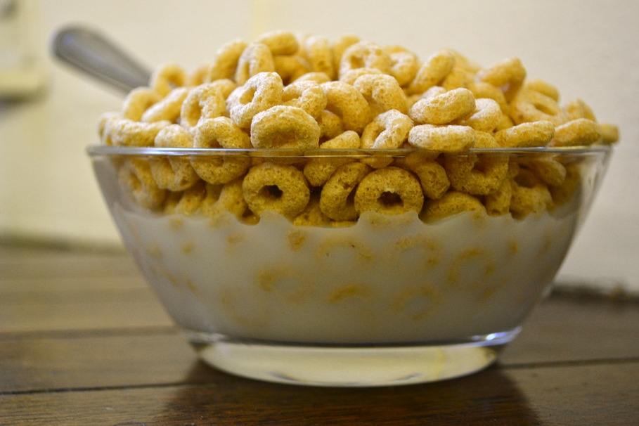

cereal and milk recipe
great cereal and milk please make it

Ingredients
- 1 part cereal of your choice
- 1 part milk of your choice
Directions
- gather your ingredients and a bowl that is the correct size to hold the amount of food necessary to quell your hunger
- pour the cereal of your choice into the bowl
- add a portion of milk similar in volume to that of the cereal into the bowl
- add any optional toppings of your choice and enjoy!